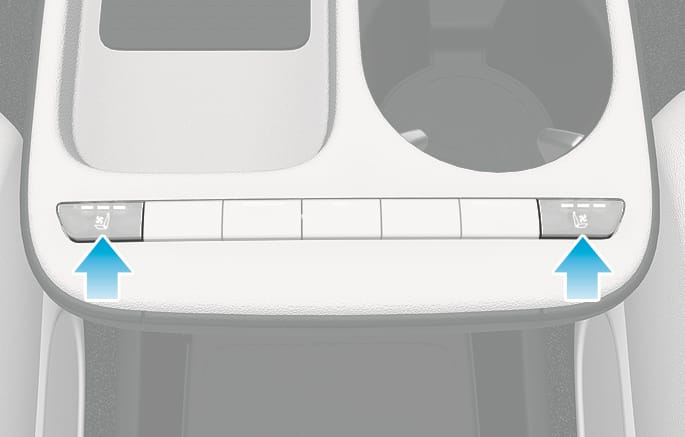

앞좌석 통풍 시트
기온이 높을 때 에어컨과 함께 통풍 시트를 사용하십시오.

2C_FrontSeatVentilationSwitchTypea
차량의 시동을 건 후 통풍 시트 버튼을 누르십시오.
-
버튼을 누를 때마다 강-중-약-꺼짐 순으로 작동 상태가 변경됩니다.
-
통풍 시트를 켠 후 3-5분 후 온도 변화를 느낄 수 있습니다.
-
시동을 껐다 걸면 통풍 시트가 꺼진 상태로 유지됩니다. 단, 운전석 공조 자동 제어 기능이 켜진 경우 외부 온도에 따라 통풍 시트 기능이 자동 제어됩니다(설정 > 차량 > 시트 > 운전석 시트 열선/통풍).
-
가급적 통풍 시트와 에어컨을 함께 사용하십시오. 에어컨을 끈 상태로 통풍 시트를 장시간 사용하면 통풍 시트 성능이 저하될 수 있습니다.